Unitree R1
휴머노이드
R1 Air · R1 Basic · R1 EDU
개봉과 거치대 조립, 리모컨과 운용 모드, 시작 · 종료 순서, 관절 · IMU 교정, 음성 비서와 포장까지 R1을 안전하게 다루는 데 필요한 내용을 한 권에 정리했습니다. 2차 개발은 별도의 개발 설명서를 보십시오.

이 설명서에 대하여
| 로봇 | Unitree R1 (R1 Air · R1 Basic · R1 EDU) |
| 근거 문서 | Unitree R1 개발자 문서의 About R1 · Operational Guidance (support.unitree.com/home/en/R1_developer, 2026-11-06 미러) · Unitree 교육 영상의 자막과 앱 화면 · R1 리모컨 버튼 스티커 (제어 버전 1.0.2.0 이상) · WeGo R1 사용 매뉴얼 v1.1 · Unitree R1 제품 페이지 · 앱 연결은 Unitree G1 User Manual V1.0(같은 Unitree Explore 앱)과 WeGo 입고 검수 절차 |
| 실측 자료 | WeGo의 R1 운용 · 개발 기록 (2026년 8 ~ 10월) |
| 함께 보는 책 | Unitree R1 개발 설명서 (R1 EDU의 SDK 개발) |
| 판 | 한국어판 · 2026.11.18 |
| 문의 | go.support@wego-robotics.com |
본문의 문서 표시는 Unitree 공식 자료(개발자 문서 · 교육 영상 · 리모컨 스티커)와 WeGo 사용 매뉴얼의 내용이고, 실측 표시는 WeGo가 직접 확인한 내용입니다. 공식 자료끼리 다른 곳은 본문에 함께 적었습니다. 펌웨어가 바뀌면 리모컨 조작과 기능이 달라질 수 있으니 납품 장비에서 다시 확인하십시오.
R1 EDU 개발 연산 유닛(PC2)의 공장 기본 계정은 unitree / 123입니다 (9장 "유선 연결 · SSH 접속").
로봇을 외부 네트워크에 연결하기 전에 passwd로 비밀번호를 반드시 바꾸십시오.
© WeGo Robotics. 표지와 그림 2의 R1 이미지는 Unitree가 공개한 URDF 메시를 MuJoCo로 렌더링한 것입니다. 그림 3 · 그림 5 · 그림 7 · 그림 9 ~ 그림 14 · 그림 17은 Unitree 자료, 그림 8 · 그림 15 · 그림 16은 Unitree 교육 영상의 갈무리입니다.
목차
- 01시스템 구성
- 02중요 안전 수칙
- 03하드웨어
- 04리모컨과 운용 모드버튼 · LED · 바인딩
- 05개봉 · 거치대 · 포장
- 06시작 · 종료 순서앱 연결 (AP 모드 · Wi-Fi 모드) 포함
- 07관절 · IMU 교정
- 08음성 비서와 오디오 재생
- 09R1 EDU 개발 안내네트워크 · 유선 연결 · SSH 접속
- 10WeGo Humanoid Studio 미리보기
- 11문제 해결
- 부록빠른 참조
시스템 구성
R1은 키 123 cm, 무게 약 29 kg(Air 약 27 kg)의 경량 휴머노이드입니다. 보행과 균형은 로봇에 내장된 운동 제어 프로그램이 맡고, 현장 운용은 리모컨으로 합니다. R1 EDU는 여기에 SDK 2차 개발 기능이 더해집니다.
모델 구분 문서
| 항목 | R1 Air | R1 Basic | R1 EDU |
|---|---|---|---|
| 전체 자유도 | 20 | 26 | 26 * |
| 다리 (한쪽) | 6 | 6 | 6 |
| 팔 (한쪽) | 4 | 5 | 5 |
| 허리 | — | 2 | 2 |
| 머리 | — | 2 | 2 |
| 무게 (배터리 포함) | 약 27 kg | 약 29 kg | 약 29 kg |
| 카메라 | 단안 | 양안 | 양안 |
| 관절 엔코더 | 이중 | 이중 + 단일 | 이중 + 단일 |
| 다관절 손 | — | — | 선택 |
| 고성능 연산 모듈 | — | — | 선택 ** |
| 2차 개발 (SDK) | — | — | 지원 |
| 보증 기간 | 6개월 | 8개월 | 12개월 |
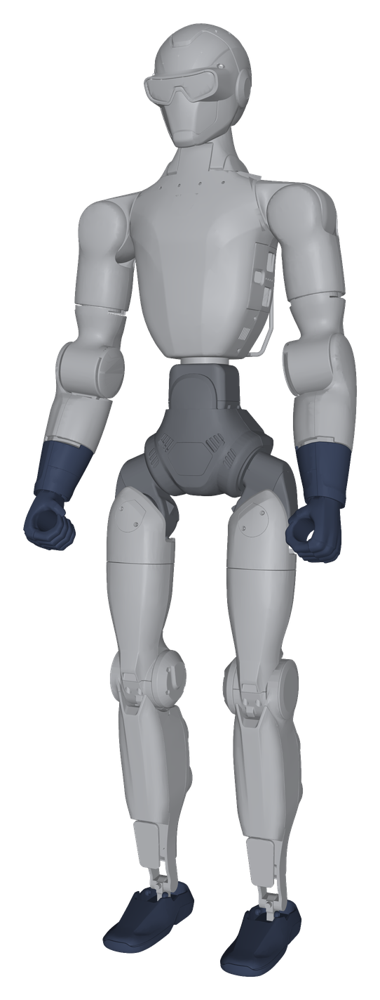
* 다관절 손을 뺀 값입니다. 제품 페이지는 손을 포함해 26 ~ 40으로 적습니다. ** NVIDIA Jetson Orin (40 ~ 100 TOPS).
모든 모델에 8코어 고성능 CPU, 4채널 마이크 배열, 스피커, Wi-Fi 6 · Bluetooth 5.2, 빠른 교체형 스마트 배터리, 충전기, 리모컨, 스마트 OTA 업그레이드가 포함됩니다. 사용 시간은 약 1시간입니다. 문서
세 가지 제어 경로
| 경로 | 용도 | 모델 |
|---|---|---|
| 리모컨 | 모드 전환, 걷기 · 달리기, 춤 · 손 흔들기 · 악수 같은 시연 동작, 음성 비서 호출, 소프트 비상 정지. 현장 운용의 기본 (4장) | 모든 모델 |
| Unitree Explore 앱 | 리모컨 바인딩(4장), 관절 · IMU 교정(7장), 음성 비서 설정과 오디오 재생(8장), 서비스 상태, 펌웨어 OTA 업데이트 | 모든 모델 |
| SDK (DDS) | 사용자 프로그램. 보행 명령, 상체 제어, 모든 관절 직접 제어 등 (9장, 개발 설명서) | EDU |
중요 안전 수칙
R1은 가볍지만 구조가 복잡하고 힘이 센 기계입니다. 넘어지면 사람이 다치고 장비가 손상됩니다. 아래 수칙은 매 운용 전에 확인하십시오.
로봇이 예기치 않게 움직이면 리모컨의 L2 + B를 5초 이상 누르십시오. R1이 댐핑 모드로 들어가 모터가 능동 동작을 멈춥니다. 이때 균형 제어도 멈추므로 로봇은 넘어지거나 천천히 주저앉습니다. 문서
[비상 정지 버튼]을 누르면 R1은 비상 정지 모드로 들어가고 모터 전원이 차단됩니다. 로봇은 그 자리에서 힘없이 쓰러집니다. 문서
2026년 6월 Unitree 측 안내에 따르면 리모컨의 비상 정지 버튼 기능은 그때 아직 개발 중이었습니다. 납품 장비에서 비상 정지 버튼이 실제로 동작하는지 매달린 상태로 먼저 확인하십시오.
운용 전 점검
| 거치대 · 보호 프레임 | 시연과 2차 개발 중에는 R1을 보호용 지지 프레임에 매달아 두기를 Unitree가 권장합니다. 문서 |
| 바닥과 공간 | 평평하고 단단한 바닥에서 운용하고, 로봇 주변을 비웁니다. 눕기 · 쪼그려 앉기 자세는 평평하고 단단한 바닥에서만 씁니다. 다른 곳에서는 넘어질 수 있습니다. |
| 역할 지정 | 리모컨 담당 한 명을 정하고, 그 사람은 언제든 L2 + B를 누를 수 있게 대기합니다. 잠금 서기에서 걷기 · 달리기로 넘어가는 동안에는 보조자가 로봇을 붙잡아 세웁니다 (6장). 문서 |
| 배터리 | 배터리를 끼운 뒤 "딸깍" 소리와 잠금 상태를 확인합니다. LED가 노란색으로 천천히 깜빡이면 배터리 부족입니다. |
| 안전 거리 | 관람객과 작업자는 로봇과 충분한 거리를 유지합니다. 움직이는 관절 사이에 손을 넣지 마십시오. |
- 걷기 · 달리기 모드의 계단 오르기 기능은 아직 배포되지 않았습니다. 로봇이 손상될 수 있으니 계단을 오르게 하지 마십시오. 문서
- 다관절 손을 장착했을 때 눕기 · 쪼그려 앉기 자세를 쓰면 손이 손상될 수 있습니다.
- 위험한 개조를 하거나 위험한 방식으로 사용하지 마십시오. R1은 민간용 로봇입니다.
하드웨어
R1 Basic과 EDU는 다리 6 × 2, 허리 2, 팔 5 × 2, 머리 2 — 모두 26개의 관절 모터를 가집니다. R1 Air는 팔이 한쪽 4자유도이고 허리 · 머리 관절이 없어 모두 20개입니다.
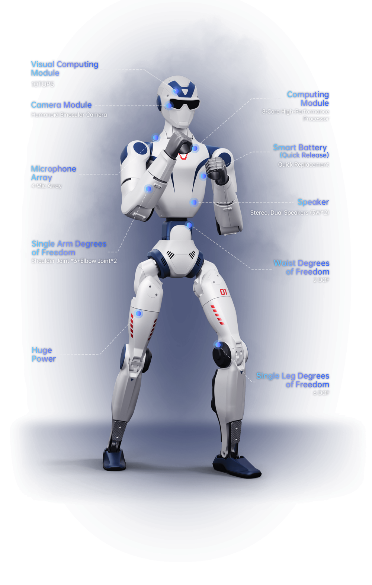
| 항목 | 값 문서 |
|---|---|
| 크기 (선 자세) | 1230 × 357 × 190 mm |
| 크기 (접은 자세) | 690 × 450 × 300 mm |
| 다리 길이 | 허벅지 + 종아리 0.6 m |
| 팔 길이 | 0.435 m * |
| 팔 최대 하중 | 약 2 kg (팔 자세에 따라 크게 다름) |
| 관절 모터 | 저관성 고속 내부 회전자 PMSM, 중공축 |
| 관절 베어링 | 크로스 롤러 · 복열 볼 베어링 |
| 엔코더 | 이중 + 단일 엔코더 (Air: 이중) |
| 냉각 | 국부 공랭 |
| 배선 | 중공축 내부 배선 |
| 전원 | 리튬 배터리 · 사용 약 1시간 |
| IMU | 몸통 · 골반 (앱의 Body imu · Crotch imu) |
* About R1의 "Arm Span" 값입니다. 제품 페이지는 아래팔 + 위팔 420 mm로 적습니다.
관절 구성
| 부위 | Basic · EDU | Air |
|---|---|---|
| 다리 | 6 × 2: 고관절 피치 · 롤 · 요, 무릎, 발목 피치 · 롤 | 6 × 2 |
| 허리 | 2: 롤 · 요 | — |
| 팔 | 5 × 2: 어깨 피치 · 롤 · 요, 팔꿈치, 손목 롤 | 4 × 2 |
| 머리 | 2: 피치 · 요 | — |
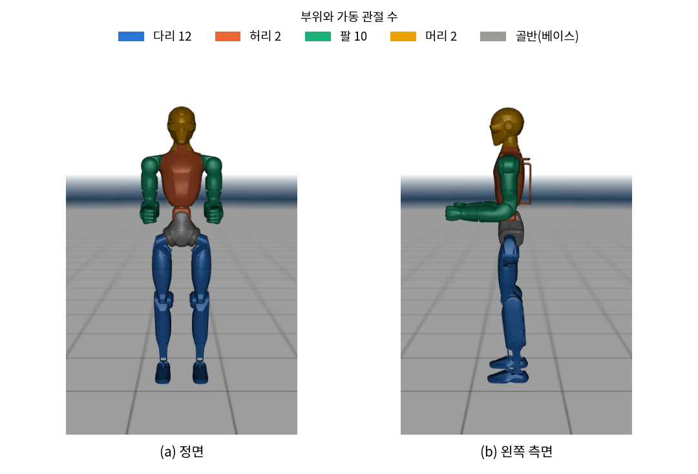
관절 번호, 가동 범위, 토크 한계는 개발 설명서 2장에 있습니다.
상단 인터페이스 문서
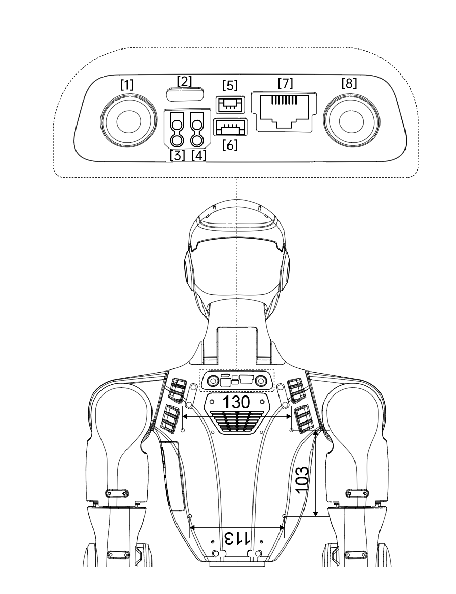
| 번호 | 인터페이스 | 내용 |
|---|---|---|
| 1 | 버튼 | 서기 / 눕기. 짧게 누르면 음성 안내가 끝나고 3초 뒤 동작합니다 |
| 2 | Type-C | 미사용. 신형에서는 없어집니다 |
| 3 | XT30UPB-F | 24 V / 3 A 전원 출력 |
| 4 | XT30UPB-F | 36 V / 5 A 전원 출력 |
| 5 · 6 | GH1.25 | 예비 소켓. 미사용, 신형에서는 없어집니다 |
| 7 | RJ45 | 1000BASE-T 기가비트 이더넷 |
| 8 | 예비 버튼 | 미사용 |
머리 카메라 문서
| 항목 | R1 Basic · EDU (양안 깊이 카메라) | R1 Air (단안) |
|---|---|---|
| 시야각 | 수평 최대 146° · 수직 최대 124° | 수평 최대 146° · 수직 최대 110° |
| 컬러 영상 | 최대 1280 × 1080 · 30 Hz | 문서에 따로 없음 |
| 깊이 영상 | 544 × 448 · 10 Hz | |
| 동적 범위 | 일반 66 dB · HDR 모드 100 dB 이상, 글로벌 노출, 850 / 940 nm 근적외선 강화 |
리모컨과 운용 모드
R1은 다섯 가지 모드로 동작하며, 지금 어느 모드인지는 몸체의 LED 띠 색으로 알 수 있습니다. 모드 전환은 대부분 L2를 누른 채 다른 버튼을 누르는 조합입니다.
모드와 LED 색 문서
| 모드 | LED 띠 | 설명 |
|---|---|---|
| 제로 토크 | 보라 (계속 켜짐) | 모든 모터가 능동 동작을 멈춥니다. 로봇을 흔들어도 저항이 없습니다. |
| 댐핑 (감쇠) | 주황 (계속 켜짐) | 모든 모터가 능동 동작을 멈추지만, 움직이면 뚜렷한 저항이 느껴집니다. 여기서 준비 모드로 들어갈 수 있습니다. |
| 준비 (잠금 서기) | 진한 파랑 (계속 켜짐) | 보행 모드로 가기 전 5초 동안 천천히 준비 자세를 취합니다. 균형 제어가 동작하지 않습니다. |
| 보행 (걷기 · 달리기) | 흰색 (계속 켜짐) | 로봇이 스스로 균형을 잡고, 리모컨으로 이동을 조작합니다. |
| 디버그 | 노랑 (계속 켜짐) | SDK 저수준 개발용. 댐핑 또는 제로 토크에서 들어가며, 내장 운동 제어가 명령을 멈춥니다. 확인 조작(L2 + A)을 하면 위치 유지 자세(Position Mode)로 들어갑니다. 동작이 교육 영상과 다르면 L2 + R2를 여러 번 누릅니다. |
| 비정상 상태 | 빨강 (천천히 깜빡임) | 11장 문제 해결을 보십시오. |
| 배터리 부족 | 노랑 (천천히 깜빡임) | 배터리를 충전하거나 교체합니다. |
리모컨 각 부분 문서
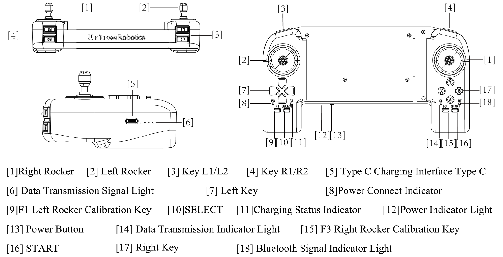
| 1 · 2 | 오른쪽 · 왼쪽 조이스틱 | 7 · 17 | 왼쪽 키 · 오른쪽 키 | 11 · 12 | 충전 상태 · 전원 표시등 |
| 3 · 4 | L1 / L2 · R1 / R2 | 8 | 전원 연결 표시등 | 13 | 전원 버튼 |
| 5 | Type-C 충전 단자 | 9 · 15 | F1 왼쪽 · F3 오른쪽 조이스틱 보정 키 | 16 | START |
| 6 · 14 | 데이터 전송 신호등 · 표시등 | 10 | SELECT | 18 | 블루투스 신호 표시등 |
리모컨 조작 문서
리모컨 켜기: 전원 버튼을 짧게 한 번 누른 뒤 2초 이상 길게 누릅니다. DL 표시등이 계속 켜져 있으면 연결된 것입니다. "L2 + B"는 L2를 누른 채 B를 누른다는 뜻입니다. 표의 ★는 짧게 누르기, ▲는 2초 길게 누르기입니다 (리모컨 스티커, 제어 버전 1.0.2.0 이상).
| 구분 | 기능 | 버튼 |
|---|---|---|
| 모드 전환 | 제로 토크 | L2 + Y ★ |
| 모드 전환 | ① 댐핑 | L2 + B ★ · 운동 제어 중 5초 누르면 댐핑 보호 상태 (소프트 비상 정지) |
| 모드 전환 | ② 잠금 서기 (준비) | L2 + ↑ ★ |
| 모드 전환 | ③ 눕기 ↔ 서기 | L2 + X ▲ |
| 모드 전환 | ④ 앉기 | L2 + ← ▲ |
| 모드 전환 | 디버그 | L2 + R2 · 확인 L2 + A (댐핑 또는 제로 토크에서) |
| 운동 제어 | ⑤ 걷기 · 달리기 | R2 + A ★ |
| 운동 제어 | 저속 / 고속 | R2 + ↓ / R2 + ↑ ★ * |
| 이동 | 앞 · 뒤 · 옆 이동 / 회전 | 왼쪽 조이스틱 앞 · 뒤 · 왼쪽 · 오른쪽 / 오른쪽 조이스틱 왼쪽 · 오른쪽 |
| ⑥ 춤 | 쿵후 · 춤 1 · 춤 2 · 춤 3 · 절권도 | R1 + SELECT · ↑ · ← · → · ↓ ★ (걷기 · 달리기 모드에서) |
| ⑥ 춤 | 트위스트 · 긴급 중단 | R2 + ← ★ · 춤 중 START 두 번 |
| 상호작용 | 악수 · 높이 들어 손 흔들기 · 거절 (두 팔 X) | SELECT + A · Y · X ★ ** |
| 상호작용 | 가슴 앞 손 흔들기 · 키스 · 박수 · 오른팔 들기 | Y · X · A · B 두 번 |
| 상호작용 | 왼손 · 오른손 · 두 손 들기 | ← · → · ↑ 두 번 |
| 음성 비서 | 모드 전환 · 호출 · 중단 | 8장 |
* Unitree 웹 문서는 저속 · 고속을 "R2 + ↓ / ↑ 길게"로 적었고, 스티커는 짧게(★)로 적었습니다. ** 웹 문서의 표는 SELECT + X를 "돌아서 손 흔들기"로 적었고, 스티커는 "거절(두 팔 X)"입니다. 납품 장비에서 확인하십시오.
누운 자세: 부팅 → 댐핑 ① → 잠금 서기 ② → 서기 ③ → (보행 ⑤) → 시연 → 눕기 ③ → 종료
앉은 자세 (스티커 권장): 부팅 → 댐핑 ① → 잠금 서기 ② (사람이 받침) → 시연 → 앉기 ④ → 종료
리모컨 바인딩 문서
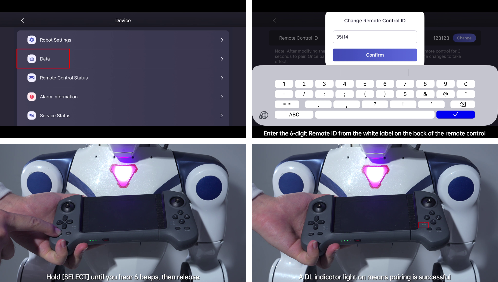
- 앱Unitree Explore 앱에서 [Device] → [Data] → [Remote Control Binding]을 엽니다.
- ID 입력[Change]를 누르고, 리모컨 뒷면 흰 라벨의 6자리 리모컨 ID를 입력해 [Confirm]합니다.
- 리모컨 켜기리모컨 전원 버튼을 짧게 → 길게 눌러 켜고 로봇 가까이 가져갑니다.
- 짝 맺기SELECT를 누르고 있다가 삐 소리가 6번 나면 뗍니다. 앱 화면은 "SELECT를 3초 누르고, 성공하면 리모컨을 다시 켜야 적용된다"고 안내합니다.
- 확인DL 표시등이 켜지면 성공입니다.
개봉 · 거치대 · 포장
R1은 보관 케이스에 담겨 운송 상자와 컬러 박스로 포장되어 옵니다. 꺼내기 전에 거치대를 먼저 조립하고, 운송할 때는 같은 케이스에 거꾸로 넣습니다. 절차는 Unitree 교육 영상(Unboxing, Packing)의 자막을 옮겼으니 영상과 함께 보십시오.
A. 개봉 문서
- 상자운송 상자를 열고, 안의 컬러 박스를 엽니다.
- 케이스 꺼내기끈을 당겨 보관 케이스를 밀어 꺼냅니다.
- 뚜껑 열기벨크로 끈과 걸쇠를 풀어 뚜껑을 엽니다.
- 구성품 확인오른쪽 표의 구성품을 꺼내 확인합니다.
| 구성품 (영상 순서) |
|---|
| 로봇 몸체 스티커 · 사용 설명서 |
| 거치대 받침 · 지지대 · 브라켓 · 보호용 폼 |
| 리모컨 |
| 교정용 강철 축 (7장) |
| R1 배터리 · 충전기 · 충전 케이블 |
- 거치대로봇을 꺼내기 전에 거치대를 먼저 조립합니다 (B).
- 다리 돌리기영상처럼 로봇의 다리를 들어 바깥쪽으로 돌립니다.
- 폼 빼기폼 받침과 머리 보호 폼을 차례로 빼냅니다. 포장할 때 다시 쓰니 버리지 마십시오.
- 들어 올리기허리를 잡고 상체를 움직여, 상체를 완전히 세워 앉은 자세로 만든 뒤 로봇 전체를 들어 올립니다.
- 거치거치대에 겁니다 (B의 그림 11).
B. 거치대 조립 문서
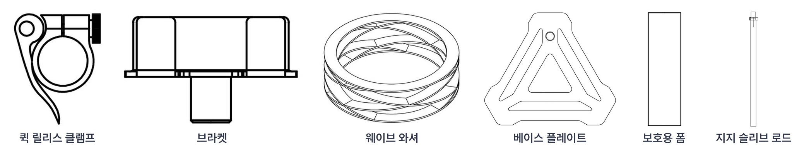
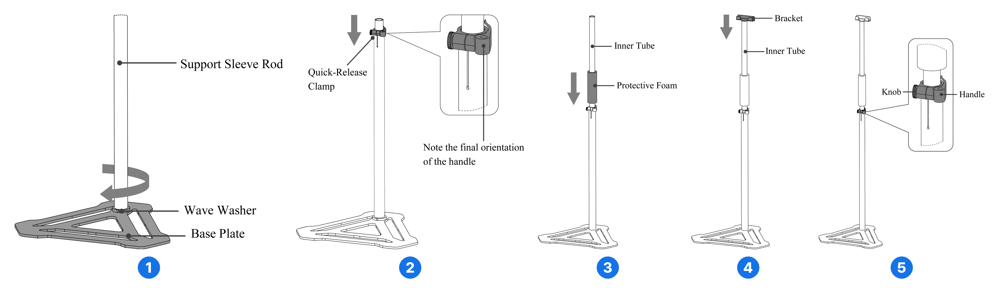
- 받침 고정지지 슬리브 로드, 웨이브 와셔, 베이스 플레이트를 힘껏 조여 고정합니다.
- 클램프 끼우기퀵 릴리스 클램프를 지지 슬리브 로드에 끼웁니다. 손잡이의 최종 방향이 그림과 같아야 합니다.
- 보호용 폼안쪽 튜브를 바깥으로 당긴 뒤 보호용 폼을 튜브에 끼웁니다.
- 브라켓브라켓을 안쪽 튜브에 단단히 조입니다.
- 높이 조절조절 손잡이로 안쪽 · 바깥쪽 튜브 사이의 잠금 힘을 맞추고, 손잡이를 조이거나 풀어 브라켓 높이를 맞춥니다.
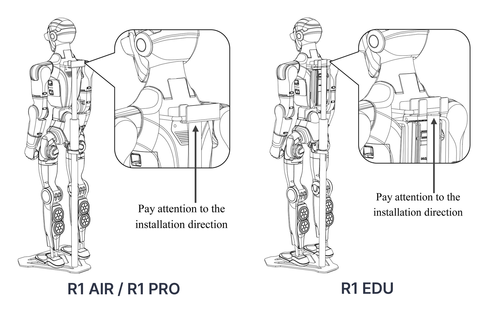
C. 포장 문서
- 내리기허리를 받쳐 로봇을 거치대에서 내리고, 케이스에서 조금 떨어진 곳에 눕힙니다.
- 앉히기 · 머리로봇을 케이스 가장자리에 앉히고, 머리를 먼저 해당 홈에 넣습니다. 팔 위치를 맞춥니다.
- 엉덩이다리를 들어 엉덩이를 홈에 밀어 넣습니다. 종아리 위치에 주의합니다.
- 폼 받침팔을 비켜 폼 받침을 끼운 뒤 팔을 제자리로 돌립니다. 얼굴에는 반드시 보호 폼을 놓습니다.
- 다리허벅지를 안쪽으로 돌려 폼 받침 홈에 넣습니다. 발끝 각도에 주의합니다.
- 닫기 · 고정뚜껑을 닫기 전에 걸쇠가 열려 있는지 확인하고, 닫은 뒤 모든 끈을 단단히 조여 운송합니다.
시작 · 종료 순서
처음 시작할 때는 거치대에 건 채로 시작하는 방법(A)을 권장합니다. 넓고 평평한 바닥이 있으면 누운 자세에서도 시작할 수 있습니다(B). 휴대폰 앱 연결은 이 장 끝에 있습니다.
A. 거치대에서 시작 문서
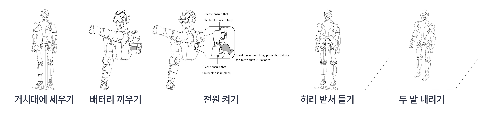
- 거치R1의 앞면이 앞을 향하도록 거치대에 겁니다. 주변 장애물을 치우고 팔다리를 자연스럽게 내려 둡니다.
- 배터리왼팔을 들어 올리고 배터리를 넣습니다. "딸깍" 소리가 나고 잠금장치가 단단히 걸렸는지 확인합니다.
- 전원배터리 전원 버튼을 1초 짧게 누른 뒤 2초 이상 길게 누릅니다. 켜지는 동안 가슴에 청록색 호흡등이 켜지고, 보라색 불이 켜지며 "시작 완료" 음성이 나오면 부팅이 끝난 것입니다.
- 리모컨리모컨을 켜고(짧게 → 2초 이상) DL 표시등이 계속 켜져 있는지 확인합니다.
- 준비 모드L2 + ↑를 누르면 "Standing Lock Mode" 안내가 나옵니다. 양손으로 로봇의 허리를 앞에서 받쳐 거치대에서 들어 올립니다. 이때 로봇은 스스로 균형을 잡지 못하므로 손을 놓지 마십시오.
- 보행 모드두 발이 모두 바닥에 닿으면 R2 + A를 누릅니다. 로봇이 스스로 균형을 잡으면 손을 놓아도 됩니다.
B. 누운 자세에서 시작 문서
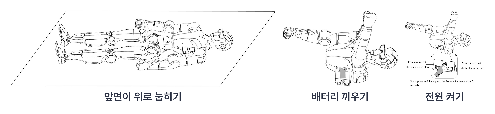
- 눕히기넓은 공간의 평평한 바닥에 R1을 앞면이 위를 향하게 눕히고, 팔과 다리를 자연스러운 자세로 놓습니다.
- 배터리 · 전원A의 ② ~ ③과 같습니다.
- 리모컨 · 준비 모드리모컨을 켜고 L2 + ↑를 누릅니다. 로봇은 앞면이 하늘을 향한 채로 있어야 합니다.
- 일어서기L2 + X를 길게 누르면 로봇이 스스로 누운 자세에서 선 자세로 바뀝니다.
- 보행 모드안정적으로 서 있으면 R2 + A를 누릅니다.
C. 종료 문서
- 공간 확보R1을 넓은 공간에 세워 주변에 충분한 공간을 둡니다.
- 눕히기L2 + X를 길게 누르면 R1이 스스로 눕습니다.
- 전원 끄기배터리 전원 버튼을 짧게 누른 뒤 2초 이상 길게 누릅니다.
- 배터리 분리왼팔을 들어 올리고 배터리를 빼냅니다. 움직이는 관절에 손이 끼이지 않게 주의합니다.
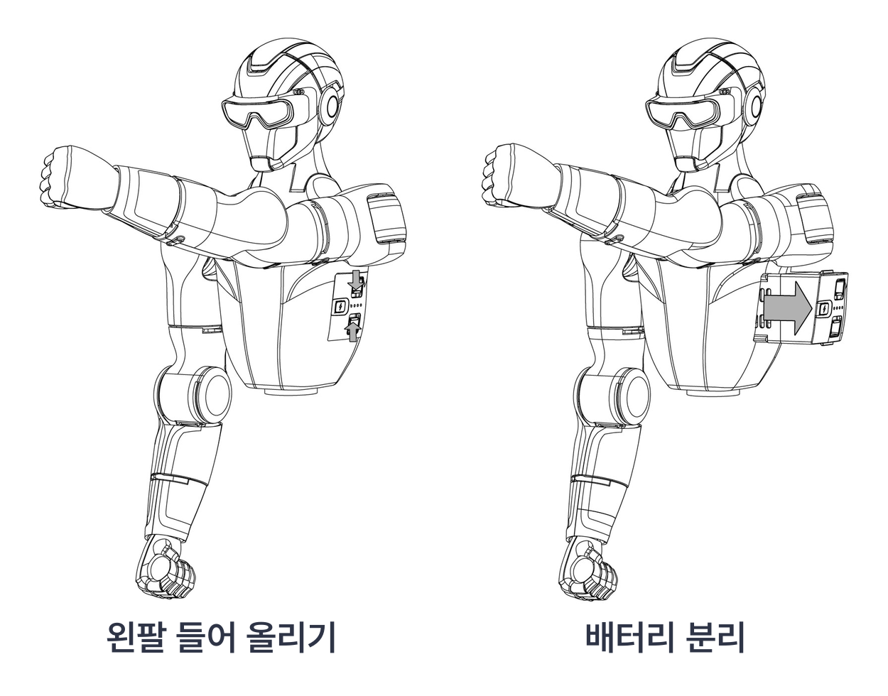
D. 앱 연결 — AP 모드 · Wi-Fi 모드
리모컨 바인딩(4장), 관절 · IMU 교정(7장), 음성 비서 설정과 오디오 재생(8장), 펌웨어 업데이트는 Unitree Explore 앱으로 합니다. 앱은 블루투스로 로봇을 찾아 네트워크를 설정한 뒤, 아래 두 방식 중 하나로 로봇에 연결합니다.
| 방식 | 연결 | 알맞은 곳 |
|---|---|---|
| AP 모드 | 휴대폰이 R1이 내보내는 Wi-Fi 핫스팟에 직접 접속합니다 | 공유기가 없는 곳, 현장 시연 |
| Wi-Fi 모드 | R1과 휴대폰이 같은 공유기(Wi-Fi)에 접속합니다 | 연구실 · 사무실. 펌웨어 업데이트, 음성 비서처럼 인터넷이 필요한 기능 |
- 앱 설치Unitree Explore 앱을
www.unitree.com/mobile/app/R1에서 설치합니다. 앱은 최신 버전으로 씁니다. - 블루투스 켜기휴대폰의 블루투스를 켜고, 휴대폰 설정에서 Unitree Explore 앱에 블루투스 권한을 허용합니다. 권한이 없으면 앱이 로봇을 찾지 못합니다.
- 로봇 켜기A 또는 B 순서대로 R1을 켜고 "시작 완료" 음성이 나올 때까지 기다립니다. 휴대폰은 로봇 가까이에 둡니다.
- 로봇 추가앱 홈 화면에서 [Add Robot]을 누르고 목록에서 R1을 고릅니다.
- 연결 방식 선택[AP Mode] 또는 [Wi-Fi Mode]를 고르고 앱의 안내를 따릅니다. AP 모드는 휴대폰 Wi-Fi 설정에서 R1의 핫스팟에 접속합니다. 핫스팟 이름에는 특수 문자와 공백을 쓰지 마십시오. Wi-Fi 모드는 R1이 접속할 공유기를 정하고, 휴대폰도 같은 공유기에 접속해 둡니다.
- 연결 확인연결되면 앱 홈 화면에 로봇 상태가 표시됩니다. 연결되지 않으면 11장 "문제 해결"의 앱 항목을 보십시오.
앱으로 확인할 것 · 바인딩 해제
| 항목 | 위치 | 확인 내용 |
|---|---|---|
| 서비스 상태 | [Device] → [Services] → [Service Status] | 주요 서비스가 켜져 있는지 봅니다. 디버그 모드나 SDK 작업 뒤 꺼진 서비스가 있으면 다시 켜야 리모컨으로 조작할 수 있습니다 |
| 로봇 정보 | [Device] → [About Robot] | 모델과 펌웨어 버전. 기술 지원에 문의하거나 원격 업데이트를 요청할 때 이 화면을 캡처해 보내 주십시오 |
| 바인딩 해제 | [About Robot] 맨 아래 [Unbind the robot] | 로봇과 앱 계정의 연결을 끊습니다. 로봇을 다른 사람에게 넘기기 전에 누릅니다 |
R1은 처음 연결한 앱 계정에 바인딩됩니다. 앱 목록에 로봇이 보이는데 연결(Connect)되지 않으면 다른 계정의 바인딩이 남아 있는 경우가 많습니다. 이전 사용자가 [Unbind the robot]을 누르거나, 이전 사용자를 찾을 수 없으면 S/N을 적어 기술 지원(go.support@wego-robotics.com)에 바인딩 해제를 요청하십시오.
무선 간섭이 심한 곳에서는 앱의 네트워크 설정이 실패하거나 연결이 끊길 수 있습니다. 이런 곳에서는 리모컨으로 운용하고, 앱 설정은 간섭이 적은 곳에서 미리 마치십시오.
관절 · IMU 교정
관절 모터 각도와 IMU 영점은 Unitree Explore 앱으로 교정합니다. 절차는 Unitree 교육 영상(Joint Calibration 20 · 26 DOF, IMU Calibration)의 자막과 앱 화면을 옮겼습니다.
교정을 시작하면 앱이 "교정 설정은 로봇 전체 동작 성능에 영향을 줍니다. 함부로 교정하지 마십시오"라고 경고합니다. 교정은 로봇을 거치대에 매단 상태에서 합니다. 문서
관절 교정 문서
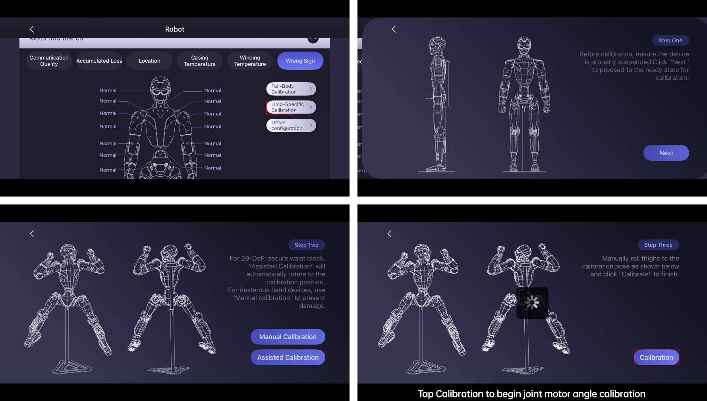
- 허리 잠금 (26자유도만)전원이 꺼진 상태에서 교정용 강철 축을 허리 앞쪽 구멍에 끝까지 넣어 허리 관절을 잠급니다. 왼손으로 거치대를 잡고 오른손으로 로봇 골반을 받칩니다.
- 팔다리를 한계까지전원이 꺼진 상태에서 팔을 들어 끝까지 돌리고, 다리를 들어 끝까지 돌립니다 (20자유도는 발끝도 들어 올림). 네 팔다리가 모두 한계에 닿을 때까지 반복합니다.
- 전원 켜기배터리 전원 버튼을 짧게 → 길게 누릅니다. 켜지는 동안 가슴이 청록색으로 호흡하고, 다 켜지면 보라색이 됩니다.
- 앱 메뉴[Device] → [Data] → [Robot]의 Motor Information에서 교정 메뉴(Full-Body Calibration · Limb-Specific Calibration · Offset configuration, 영상은 Limb-Specific Calibration)를 열고 경고에서 [Continue]를 누릅니다.
- Step One로봇이 제대로 매달렸는지 확인하고 [Next]를 누릅니다.
- Step Two[Assisted Calibration]을 누르면 관절이 교정 위치로 자동으로 돌아갑니다. 다관절 손을 단 로봇은 손 손상을 막기 위해 [Manual Calibration]을 씁니다.
- Step Three그림처럼 허벅지를 손으로 굴려 교정 자세를 맞추고 [Calibration]을 누릅니다. "Calibration Successful"이 뜨면 [Confirm]. 팔다리가 원래 위치로 돌아갑니다.
- 확인(26자유도) 강철 축을 뺍니다. L2 + ↑로 잠금 서기에 들어가 팔다리 위치가 정상인지 확인합니다.
Step Two의 앱 문구는 "29-DoF는 허리 블록을 고정"이라고 적습니다. 26자유도 영상에서는 ①의 강철 축이 그 역할을 합니다.
IMU 교정 문서
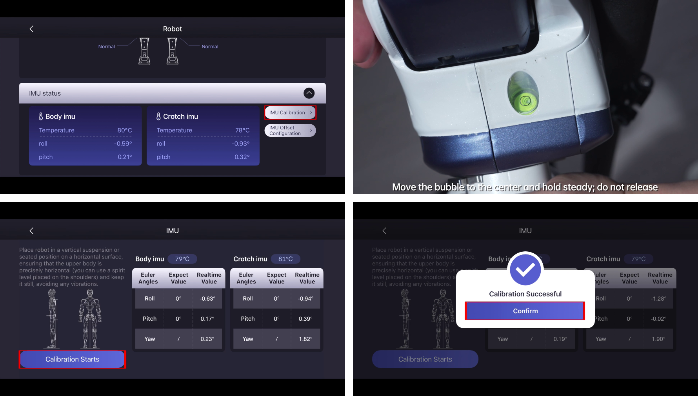
- 자세로봇을 수직으로 매달거나 수평면에 앉힌 자세로 두고, 상체가 정확히 수평이 되게 합니다. 어깨에 수준기를 올려 확인할 수 있습니다. 진동 없이 가만히 둡니다.
- 앱 메뉴[Device] → [Data] → [Robot]의 IMU status(Body imu · Crotch imu)에서 [IMU Calibration]을 누르고 경고에서 [Continue]를 누릅니다. 같은 자리에 IMU Offset Configuration도 있습니다.
- 수평 유지수준기의 기포를 가운데에 맞추고, 손을 떼지 않고 그대로 유지합니다.
- 교정[Calibration Starts]를 누릅니다. 화면의 Roll · Pitch 기대값은 0°입니다. "Calibration Successful"이 뜨면 [Confirm]을 누릅니다.
음성 비서와 오디오 재생
R1은 GPT 모델에 연결된 음성 비서(chat go 펌웨어 1.9.2.75 이상)를 갖추고 있습니다. 인터넷에 연결한 뒤 대화 모드를 켜면 잡담, 동작, 음악 재생 같은 음성 대화를 할 수 있습니다.
대화 모드 문서
| 모드 | 사용법 |
|---|---|
| 호출어 대화 | "Hello Robot"이라고 부르면 로봇이 대답한 뒤 여러 차례 자유롭게 대화합니다. 15초 동안 소리가 없으면 대화가 끝나 다시 불러야 합니다. 비교적 조용한 곳에 알맞습니다 |
| 버튼 대화 | 호출어 없이 L2 + SELECT를 누르고 있는 동안 녹음하고, 떼면 끝납니다. 그 사이의 소리를 강제로 인식하므로 시끄러운 곳에 알맞습니다 |
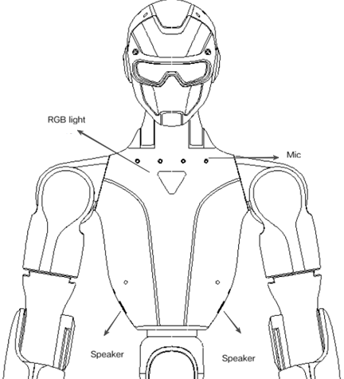
| 조작 | 방법 |
|---|---|
| 모드 전환 | 리모컨 L1 + L2 동시에, 또는 앱 [Device] → [Data] → [Audio] → [Voice Assistant] |
| 호출 · 강제 중단 | 모든 모드에서 L2 + SELECT로 호출, L1 + SELECT로 강제 중단 |
| 표시등 | 호출 전 사람 목소리를 들으면 파란색 호흡등, 호출된 뒤 명령을 받으면 초록색 호흡등 |
| 대화 끄기 | 프로그램이 잠자기 상태가 되어 녹음을 멈춥니다. 꺼진 동안에는 개인정보 문제가 없습니다 |
인식률을 높이려면
- 마이크가 소리를 받으면 호흡등이 깜빡입니다. 말하는데 깜빡이지 않으면 소리가 녹음되지 않은 것이니, 가까이 가고 모드를 확인하고 하드웨어를 점검합니다.
- 로봇 정면(마이크 구멍 방향) 1 m 안에서 말합니다.
- 스피커가 이야기나 음악을 재생하는 동안에는 인식이 잘 되지 않습니다. 재생이 끝난 뒤 말하거나 L1 + SELECT로 끊습니다.
- 호출했을 때 "Hello, I'm here"라고 답하면 GPT가 인터넷에 연결되지 않아 오프라인 음성 모드로 들어간 것입니다. 일부 질문이 늦거나 답이 없으면 인터넷 검색이 필요한 질문(예: 오늘 날씨)이라 네트워크 환경의 영향을 받는 것입니다.
오디오 재생 문서
앱으로 직접 녹음한 소리나 외부 음성 파일을 로봇 스피커로 재생합니다. 위치: Unitree Explore 앱 → [go] → [More Functions] → [Player].
| 필요 버전 | 이상 |
|---|---|
| 앱 (Android · iOS) | V1.6.1 |
| Vui Service | 2.2.0.9 |
| Webrtc Bridge | 1.0.0.2 |
| Audio Hub | 1.0.0.1 |
| 외부 파일 규격 | 값 |
|---|---|
| 형식 | WAV, 16 kHz, 모노 (스테레오는 재생 문제) |
| 크기 · 길이 | 10 MB 이하 · 3분 이하 |
| 합성 음성 | Stanley (장비의 모든 음성이 이 목소리) |
| 합성 볼륨 | 100% (최대 재생 음량을 위해) |
음성 합성에는 Alibaba Cloud 또는 Volcano Engine의 음성 합성 서비스를 권장합니다.
R1 EDU 개발 안내
2차 개발은 R1 EDU만 지원합니다 (R1 Air · R1 Basic은 미지원). 사용자 프로그램은 등에 다는 개발 연산 유닛(백팩)에서 실행하고, 개발 PC는 랜 케이블로 로봇 네트워크에 연결합니다. 자세한 내용은 Unitree R1 개발 설명서를 보십시오.
| 개발 설명서 | EDU로 할 수 있는 일 |
|---|---|
| 2장 | 모든 관절의 직접 제어 (rt/lowcmd, 디버그 모드) |
| 3장 | 다관절 손 제어 (Dex1-1 · Dex2/5 · Dex3-1 · BrainCo Revo2 · LinkerHand O6) |
| 4장 | DDS 토픽 · 로봇 상태 · 저수준 메시지 |
| 5장 | 보행 명령, 음성 · 조명, 머리 카메라 영상, SLAM 내비게이션 (Mid360 라이다) |
| 6장 | 균형은 로봇에 맡긴 채 팔 · 허리 요 · 머리 제어, 내장 팔 동작 실행 |
| 7 ~ 9장 | ROS 2 연동 · 오류 코드 · 백팩 설치와 시스템 백업 |
네트워크 문서
| 장치 | IP | 비고 |
|---|---|---|
| 운동 제어 컴퓨터 (PC1) | 192.168.123.161 | Unitree 공식 서비스 전용, 사용자 개발 불가 |
| 개발 연산 유닛 (PC2) | 192.168.123.164 | EDU 백팩 (Jetson Orin NX / Nano). 여기서 개발합니다 |
| Mid360 라이다 | 192.168.123.120 | SLAM 구성만 |
| 개발 PC | 192.168.123.99 | 권장. 넷마스크 255.255.255.0, 겹치지 않는 192.168.123.x면 됩니다 |
- 개발 연산 유닛의 공장 기본 계정은
unitree/123입니다. 첫 접속 뒤passwd로 비밀번호를 반드시 바꾸십시오. - SDK로 관절을 직접 움직이는 개발은 로봇을 보호 프레임에 매달고, 리모컨 담당이 L2 + B에 손을 둔 상태에서만 합니다.
유선 연결 · SSH 접속
개발 PC를 R1에 케이블로 연결하고 개발 연산 유닛(PC2)에 접속하는 순서입니다. WeGo가 입고 검수 때 쓰는 순서와 같습니다.
- 케이블 연결몸통 상단(목 바로 아래) 인터페이스의 RJ45 포트(3장 "상단 인터페이스" 7번)와 개발 PC를 LAN 케이블로 연결합니다.
- 고정 IP 설정개발 PC의 유선 네트워크에
192.168.123.99/255.255.255.0을 줍니다. 로봇이 쓰는.161(PC1) ·.164(PC2) ·.120(라이다)는 피합니다. - 연결 확인
ping 192.168.123.164(PC2)와ping 192.168.123.161(PC1)이 응답하면 연결된 것입니다. - SSH 접속
ssh unitree@192.168.123.164로 접속합니다. 공장 기본 비밀번호는123입니다. - 비밀번호 바꾸기처음 접속하면
passwd로 비밀번호를 바꿉니다. 로봇을 외부 네트워크에 연결하기 전에 반드시 바꾸십시오. - 예제 실행관절을 직접 움직이는 저수준 예제는 디버그 모드(4장)에서, 보행 명령 같은 고수준 예제는 보행 모드에서 실행합니다.
끝나면
Ctrl+C로 멈추고, 앱 [Service Status]에서 꺼진 서비스가 없는지 확인합니다.
sudo nmcli con add type ethernet ifname <유선 인터페이스> con-name r1 \
ipv4.method manual ipv4.addresses 192.168.123.99/24
sudo nmcli con up r1
ping -c 3 192.168.123.164
ssh unitree@192.168.123.164 # 비밀번호 123 (공장 기본값)
passwd # 첫 접속 때 비밀번호 바꾸기
WeGo Humanoid Studio 미리보기
WeGo Humanoid Studio는 R1 EDU의 팔을 사람의 동작으로 원격 조작하고, 그 데이터를 모아 로봇 스킬을 학습시키는 WeGo의 통합 소프트웨어입니다. 자세한 설치 · 조작 방법은 별도의 WeGo Humanoid Studio 사용 가이드를 보십시오.
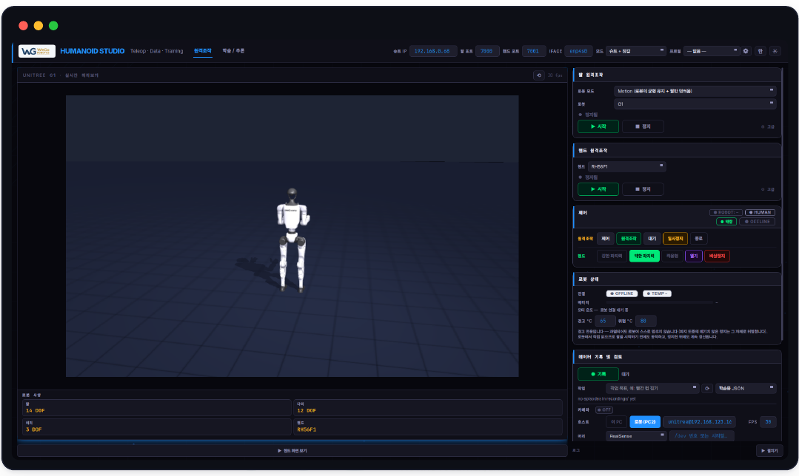
| 기능 | 내용 |
|---|---|
| 원격 조작 | 모션 캡처 슈트 또는 VR로 사람의 팔 동작을 R1의 팔에 실시간으로 옮깁니다 (rt/arm_sdk, 보행 제어는 로봇이 유지) |
| 안전 장치 | 상태 수신 확인 후에만 팔을 잡고, 시작 때 2초에 걸쳐 천천히 따라붙으며, 화면의 비상 정지로 즉시 멈춥니다 |
| 데이터 수집 · 학습 | 조작 데이터와 카메라 영상을 기록하고 LeRobot 형식으로 변환해 정책을 학습 · 실행합니다 |
| 손 | R1에는 BrainCo Revo2 다관절 손(한쪽 6자유도)을 지원합니다 |
문제 해결
증상이 반복되거나 아래 방법으로 해결되지 않으면 운용을 멈추고 WeGo 지원 창구(go.support@wego-robotics.com)로 문의하십시오. SDK 개발 중의 오류 코드는 개발 설명서 8장에 있습니다.
| 증상 | 원인 · 확인 | 조치 |
|---|---|---|
| 전원을 켜도 "시작 완료" 음성이 나오지 않음 | 배터리가 덜 끼워졌거나 버튼 조작이 짧음 | 배터리를 다시 끼워 "딸깍" 소리와 잠금을 확인하고, 1초 짧게 → 2초 이상 길게 누릅니다 |
| 리모컨 DL 표시등이 계속 켜지지 않음 | 리모컨이 연결되지 않음, 또는 바인딩되지 않은 리모컨 | 리모컨을 껐다가 짧게 → 2초 이상 길게 눌러 다시 켜고, 로봇 부팅이 끝났는지 확인합니다. 그래도 안 되면 4장의 바인딩을 다시 합니다 |
| LED가 빨간색으로 천천히 깜빡임 | 비정상 상태 | 주변을 안전하게 하고 댐핑(L2 + B)으로 멈춘 뒤 다시 시작합니다. 반복되면 문의합니다 |
| LED가 노란색으로 천천히 깜빡임 | 배터리 부족 | 배터리를 충전하거나 충전된 배터리로 바꿉니다 |
| 준비 모드에서 로봇이 기울어짐 | 준비 모드에는 균형 제어가 없음 (정상) | 보조자가 허리를 받친 채 두 발을 바닥에 내리고 R2 + A로 보행 모드에 들어갑니다 |
| 보행 모드로 들어가지 않음 | 준비 모드가 아님, 발이 바닥에 닿지 않음 | LED가 진한 파랑인지 확인하고, 두 발이 모두 닿은 뒤 다시 누릅니다 |
| 디버그 확인 조작 뒤 동작이 교육 영상과 다름 | 디버그 모드에 완전히 들어가지 않음 | 4장 "모드와 LED 색"의 디버그 항목을 따릅니다 |
| 음성 비서가 "Hello, I'm here"라고만 답함 | GPT가 인터넷에 연결되지 않아 오프라인 모드 | 로봇의 인터넷 연결을 확인합니다 (8장) |
| 말해도 호흡등이 깜빡이지 않음 | 소리가 녹음되지 않음 | 정면 1 m 안으로 가고, 대화 모드를 확인하고, 재생 중이면 L1 + SELECT로 끊습니다 |
| 외부 음성 파일이 이상하게 재생됨 | 스테레오 파일이거나 규격 밖 | WAV · 16 kHz · 모노 · 10 MB · 3분 이하로 다시 만듭니다 (8장) |
| 앱이 로봇을 찾지 못함 | 휴대폰 블루투스 꺼짐 · 앱에 블루투스 권한 없음 | 블루투스를 켜고 휴대폰 설정에서 앱에 블루투스 권한을 허용합니다 |
| 앱 목록에 로봇이 보이지만 연결되지 않음 ("Network exception") | 다른 계정에 바인딩된 상태 · 오래된 앱 | 이전 사용자가 [Unbind the robot]을 누르거나 기술 지원에 해제를 요청합니다. 앱을 최신으로 올리고 다른 연결 방식(AP ↔ Wi-Fi)과 다른 휴대폰으로도 시도합니다 |
| AP 모드 연결 실패 | 핫스팟 이름의 특수 문자 · 공백, 휴대폰이 멂 | 이름을 영문 · 숫자로 정하고 휴대폰을 로봇 가까이 둔 뒤 로봇과 앱을 다시 시작합니다 |
| 휴대폰 Wi-Fi 목록에 R1 핫스팟이 없음 | 로봇 내부 무선(AP) 이상 | 로봇을 다시 켭니다. 그래도 없으면 Wi-Fi 모드로 연결해 쓰고, 기술 지원에 점검을 요청합니다 |
| 앱 네트워크 설정 실패 · 연결이 자주 끊김 | 무선 간섭 (전시장 등) | 간섭이 적은 곳으로 옮겨 다시 설정합니다 |
ping 192.168.123.164 응답 없음 | 개발 PC가 다른 대역 · 케이블 · R1 Air/Basic (개발 연산 유닛 없음) | 192.168.123.99/24로 설정하고 상단 RJ45 포트를 확인합니다. 개발 연산 유닛은 R1 EDU에만 있습니다 |
ssh 비밀번호 거부 | 기본 비밀번호가 이미 바뀜 | 비밀번호를 바꾼 사람에게 확인합니다. 공장 기본값은 unitree / 123 |
| 외관 도장이 벗겨짐 | 전원을 켜고 끄는 과정의 접촉 | 정상입니다 문서 |
빠른 참조
거치대에서 시작
- 앞면이 앞을 향하게 거치대에 겁니다
- 왼팔을 들고 배터리 삽입 ("딸깍")
- 배터리 버튼 1초 → 2초 이상 · 보라 + "시작 완료"
- 리모컨 켜기 · DL 표시등 확인
- L2 + ↑ 준비 · 허리를 받쳐 내립니다
- 두 발이 닿으면 R2 + A
누운 자세에서 시작 · 종료
- 앞면이 위로 눕히고 전원을 켭니다
- L2 + ↑ → L2 + X 길게 (일어서기)
- R2 + A 보행
- 종료: L2 + X 길게 (눕기)
- 배터리 버튼 짧게 → 2초 이상 (끄기)
- 왼팔을 들고 배터리 분리
비상시
| L2 + B 5초 이상 | 소프트 비상 정지 → 댐핑. 균형이 풀려 넘어지거나 주저앉습니다 |
| 비상 정지 버튼 | 모터 전원 차단 → 그 자리에서 쓰러집니다. 납품 장비에서 동작 여부를 먼저 확인하십시오 |
| L2 + Y | 제로 토크 (모든 모터 정지, 저항 없음) |
| 춤 중 START 두 번 | 춤 긴급 중단 |
LED 띠
| 보라 | 제로 토크 |
| 주황 | 댐핑 |
| 진한 파랑 | 준비 (균형 X) |
| 흰색 | 보행 (균형 O) |
| 노랑 | 디버그 |
| 빨강 깜빡임 | 비정상 |
| 노랑 깜빡임 | 배터리 부족 |
| 청록 호흡 | 전원 켜는 중 |
리모컨 (★ 짧게 · ▲ 2초)
| L2 + B | 댐핑 |
| L2 + ↑ | 준비 (잠금 서기) |
| L2 + X ▲ | 눕기 ↔ 서기 |
| L2 + ← ▲ | 앉기 |
| R2 + A | 보행 |
| R2 + ↓ / ↑ | 저속 / 고속 |
| SELECT + A · Y · X | 악수 · 손 흔들기 · 거절 |
| L2 + SELECT | 음성 비서 호출 |
이 페이지를 잘라 리모컨 보관함에 넣어 두십시오.